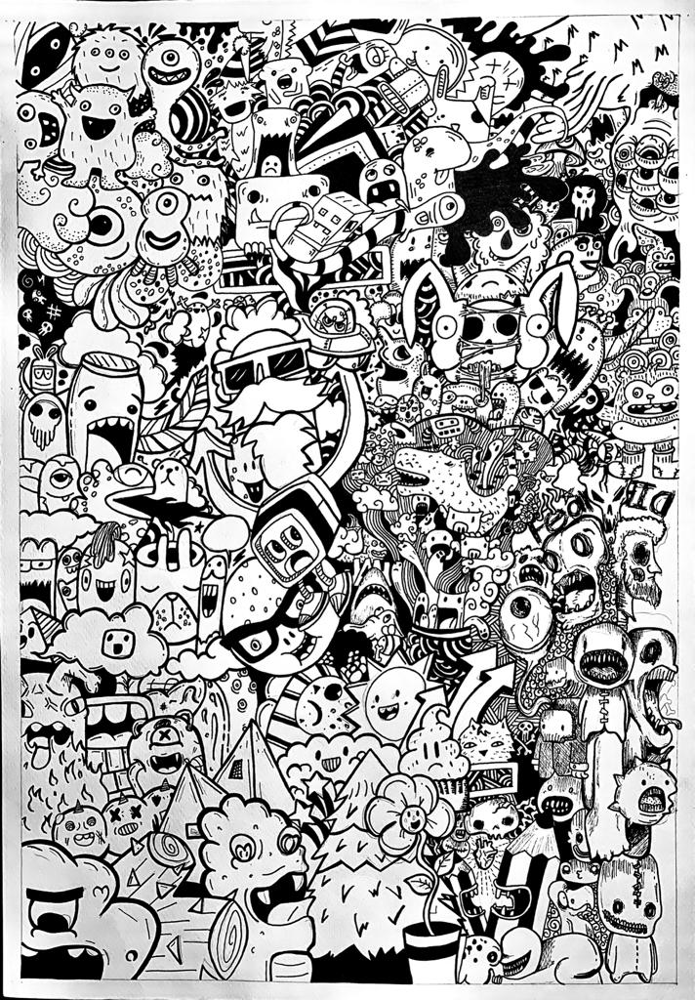
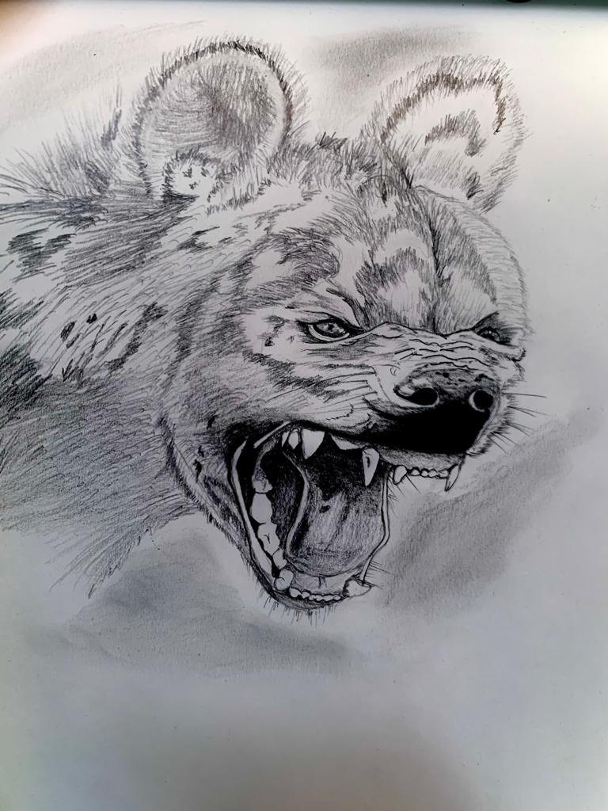
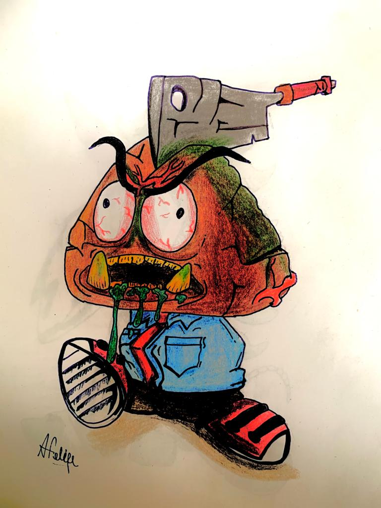
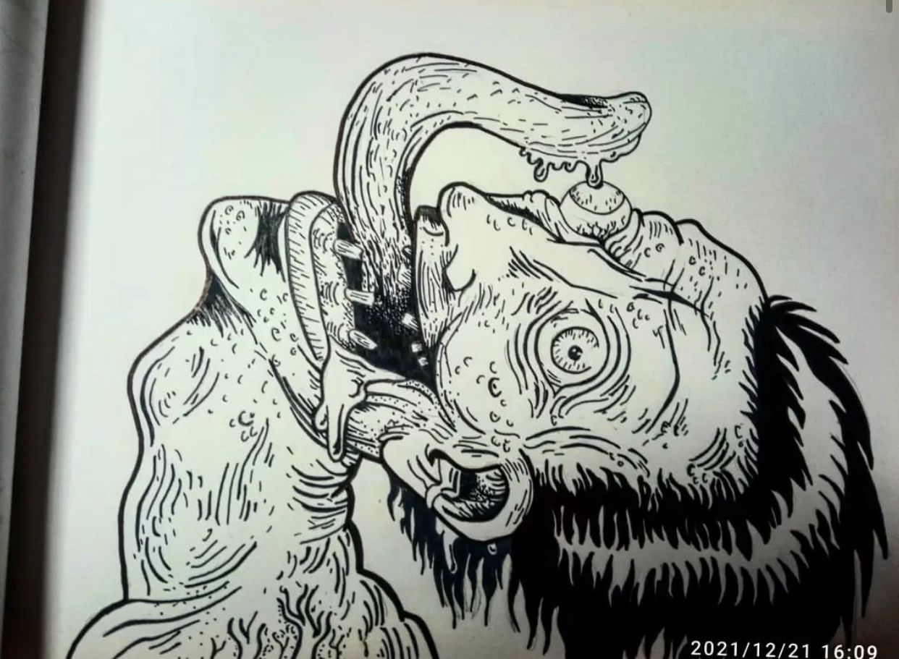
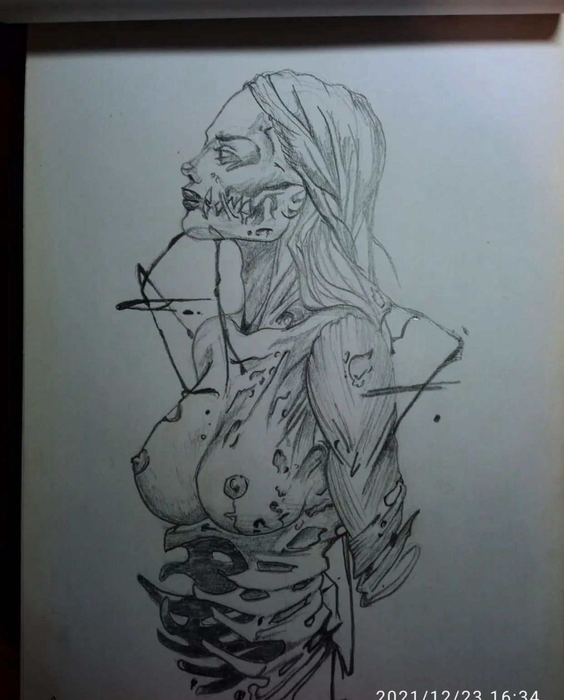
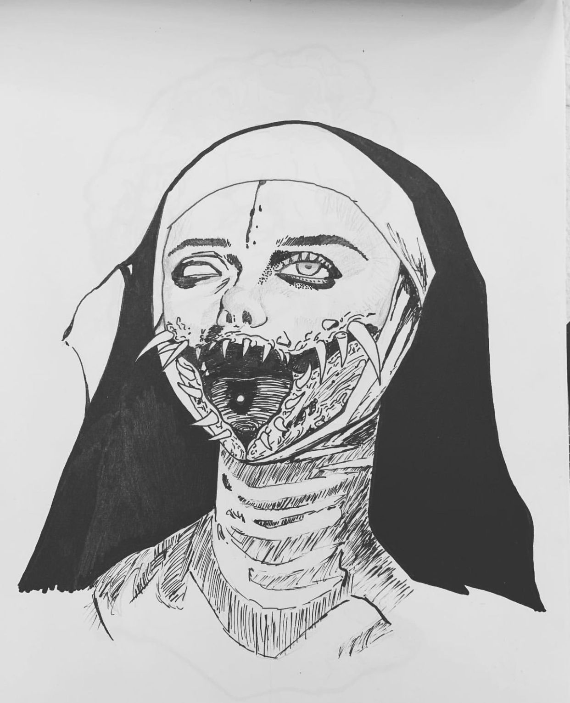
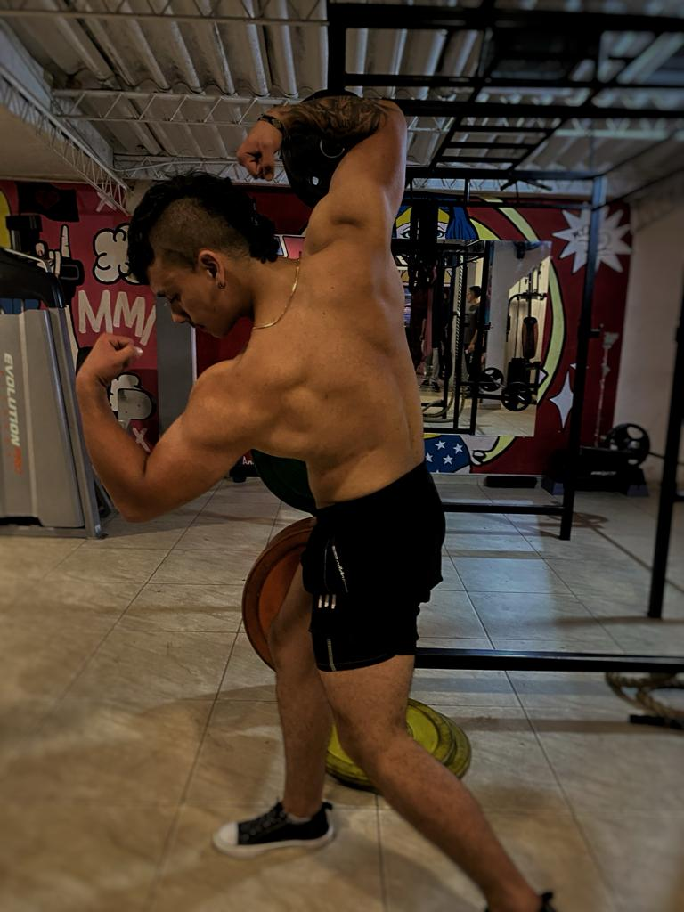
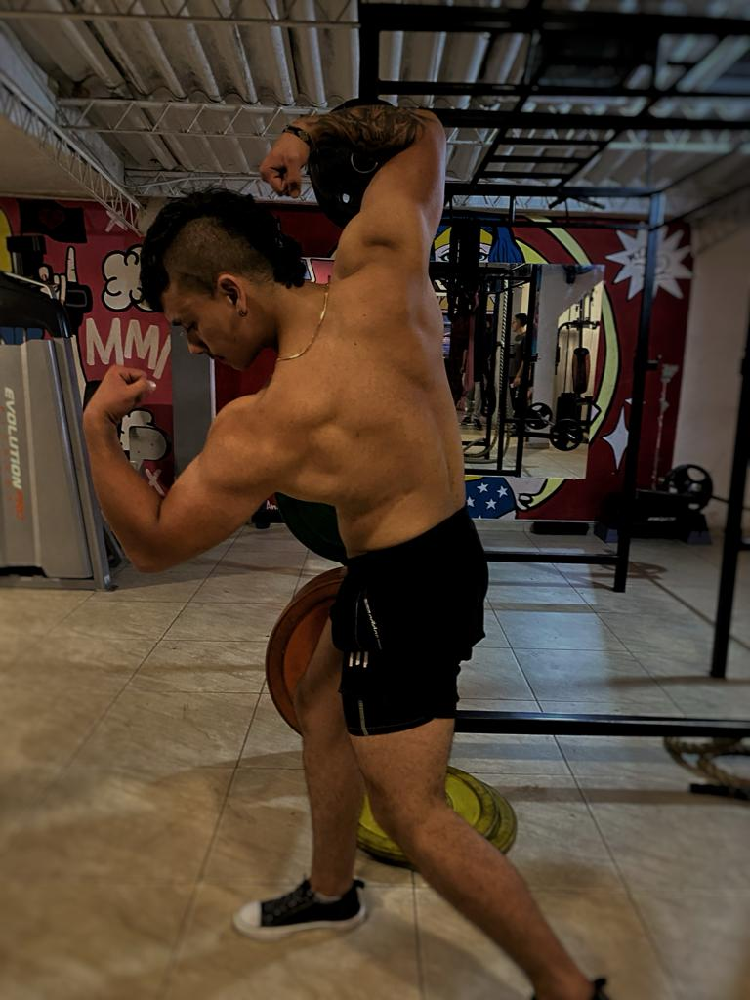

Sobre Mí
¡Hola! Soy Andres, un apasionado estudiante de diseño gráfico y actualmente formo parte del increíble equipo de un gimnasio, donde encuentro una combinación perfecta entre mi amor por el diseño y mi entusiasmo por el mundo del fitness.
Mi trayectoria académica en diseño gráfico me ha brindado la oportunidad de explorar y perfeccionar mis habilidades creativas. Estoy constantemente buscando inspiración para fusionar la estética visual con soluciones innovadoras. Creo firmemente en la importancia del diseño para comunicar de manera efectiva y estoy emocionado por seguir aprendiendo y creciendo en esta disciplina.
En paralelo, mi trabajo en el gimnasio no solo me ha permitido aplicar mis habilidades de diseño en un entorno práctico, sino que también ha añadido una dimensión emocionante a mi vida profesional. La conexión entre el diseño y el bienestar físico me motiva diariamente, y disfruto contribuyendo a un ambiente que inspira a otros a alcanzar sus metas de salud y fitness.
Estoy abierto a nuevas oportunidades y colaboraciones que me permitan seguir creciendo como diseñador gráfico, llevando mi creatividad y pasión a proyectos desafiantes y estimulantes. ¡Espero poder compartir mi visión y contribuir al éxito de futuros proyectos!






 
